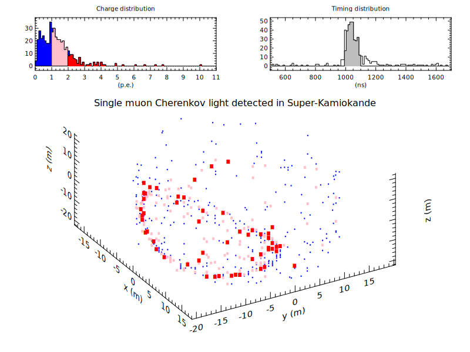

#
# data from:
# https://www-sk.icrr.u-tokyo.ac.jp/sk/assets/about/detector/evdisplay-data/sample.zip
#
args al=50,az=-60 ;# set viewing angle: al=altitude(deg), az=azimuth(deg)
read cable,charge,time,x,y,z 1ring-mu.0000.000021.csv (fs:"," nr:20,-1)
div 1 1
set xm = x/100; xlab "x (m)"
set ym = y/100; ylab "y (m)"
set zm = z/100; zlab "z (m)"
opt (lw:0 st:dot xt:5 yt:5 ts:0.8)
plot3 xm ym zm (ss:1 sc:blue al:[al] az:[az])
plot3 xm ym zm (ss:2 sc:pink cc:"1<=charge<2 & 1000<time<1100" rp:1)
plot3 xm ym zm (ss:3 sc:red cc:"2<=charge & 1000<time<1100" rp:1)
div 1 12
box 0 10 0 10 (lw:0 bp:4)
text 1 5 "Single muon Cherenkov light detected in Super-Kamiokande" (ts:3)
div 2 4
title "Charge distribution"; xlab "(p.e.)"; ylab " "
opt (lw:1 xr:0,11 ft:solid xt:1 yt:10 ts:1.1)
hplot charge (fc:blue)
hplot charge (fc:pink cc:"1<=charge<2" rp:1)
hplot charge (fc:red cc:"2<=charge" rp:1)
title "Timing distribution"; xlab "(ns)"
opt (xr:500,1700 ft:solid xt:200 ts:1.1)
hplot time
hplot time (fc:gray cc:"1000<time<1100" rp:1)
